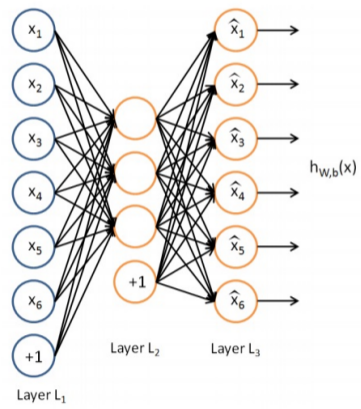
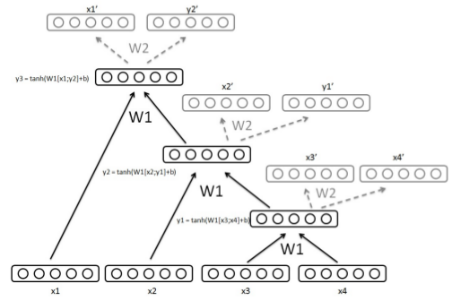
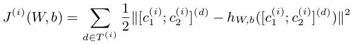

Paraphrase Detection Using Recursive Autoencoder
"What" part of the paper
Pharaphrase detection by using a Recursive Autoencoder to encode sentences to a fixed size vector. These encodings of sentences will then be used to classify sentences as paraphrases.
"How" part of the paper
Autoencoder is a simple neural network with one input layer, one hidden layer and one output layer. Given an input autoencoders are trained to output the same as input. So number of neurons in input and output layer is the same. The number of neurons in hidden layer is kept lesser than input layer (here is taken to be half the number of neurons in input layer). The idea is that the hidden layer will learn the most important lesser number of features.
Recursive Autoencoder are similar to the above idea of encoder but they can handle the variable size of sentences that will be required in paraphrase detection.
Embeddings for all the words are taken of a sentence. Lets say embeddings are n-dimensional. The neural network will have 2n number of neurons in the input layer and output layer. For hidden layer it will have n number of neurons. Embedding of first two words are concatenated and fed as input. The hidden layer will give n-dimentional vector which represents both the words combined. This hidden layer n-dimensional vector is taken and concatenated with embedding of third word to form 2n-dimension vector and fed as input. This time hidden layer vector will have information of all three words combined. This process is continued untill all the words in the sentence is consumed and we will be left with n-dimension vector that represents the whole sentence. This is called Recursive Autoencoder.
The loss that we will try to minimize here is the squared difference between the input and output of the autoencoder.
Where T(i) is the set of all non leaf nodes in the structure of sentence i.
Determining Tree Structure is another choice. It deals with which words will be fed first which last.
First is Greedy Method, compute reconstruction error of each pair of adjacent word in sentence and pick up the least error. Replce those two word vector with a single vector. Continue the process.
Second is Global Method, CKY algorithm is used where at each entry, node with the lowest reconstruction error is kept. This reduces the heavy computation because of the general grammar i.e. Y->XX and we get near optimal tree structure with better approach than Greedy method.
Third is Parse Tree, because we are interested in semantics rather than syntax. Forming parse tree and accordingly feeding words to Recursive Autoencoder is a nice method.
Classification Approach, using RAE, we also get representation of sub-phrases and not just sentence. Two methods to take into account these representations.
First is Aggregate Method, here the average is done on all the representations available from the tree.
Second is Similarity Matrix, here the similarity score(Euclidian distance) is used between each word and sub-phrases of a sentence with all other words and sub-phrases in other sentence, forming similarity matrix. Words appearing more than some threshold frequency is removed. f(n) = sigmoid(-n) is applied to each of the element in similarity matrix. This allows the words, phrases having less Euclidian distance have value close to 1 and 0 otherwise. Taking a threshold, all the values below threshold are made 0. All the elements of the resultant matrix is added and normalize by number of words in sentences to create a feature. Choosing 200 different such threshold, 200 different features are generated which is used by classification algorithm.